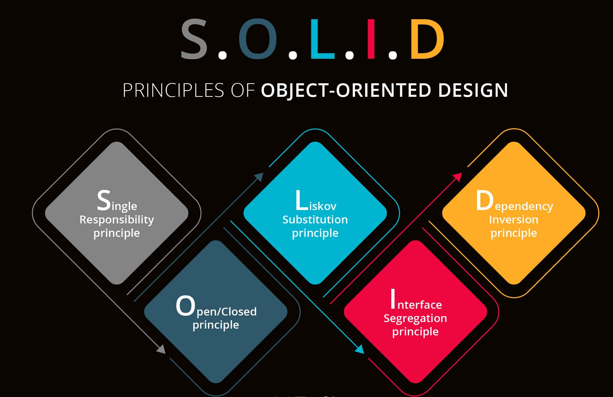

A good algorithm is the foundation of a good software application. After the algorithm is in place, the next most critical step in Software Engineering is to verify that the software or application is created according to best design and architecture practices. Various best practices for effective software application design have been identified by several researchers and experts. The design principles known by the term SOLID are one of the most well-known. These best practices, when considered in designing an object-oriented software application would tend to reduce code complexity, reduce the risk of code breaks, improve the communication between different entities and make code more flexible, readable, and manageable.

Robert C Martin's SOLID principles are as below:
S – Single Responsibility Principle:
The Single Responsibility Principle states that a class should have only one primary responsibility and should not take other responsibilities. Robert C. Martin explains this as “A class should have only one reason to change”. In our below Calculator class example, each class has its own single responsibility like the calculator class has a single responsibility of being the outermost class that holds methods for all operations, like the ‘add_addition_calculation’, ‘add_subtraction_calculation’, each having a single responsibility of calling the respective operations’ classes, such as ‘Addition’, ‘Subtraction’, ‘Multiplication’ and ‘Division’ respectively. These classes in-turn have a single responsibility of performing their respective operations on a list of numbers.
from calc.historyMod.history import History
class Calculator:
""" This is the Calculator class"""
history = []
@staticmethod
def add_number(tuple_values: tuple):
""" adds number to result"""
# create an addition object using the factory we created on the calculation class
History.add_addition_calculation(tuple_values)
return True
@staticmethod
def subtract_number(tuple_values: tuple):
""" subtract number from result"""
History.add_subtraction_calculation(tuple_values)
return True
O – Open-Closed Principle:
Open Closed Principle was first conceptualized by Berterd Meyer in 1988. Robert C. Martin mentioned
this as “the most important principle of object-oriented design”. Open Closed Principle states that
“Software entities (classes, modules, functions, etc.) should be open for extension, but closed for
modification.” Following this principle ensures that a class is well defined to do what it is
supposed to do. Adding any further features can be done by creating new entities that extend the
existing class’s features and add more features to itself. Thus preventing frequent and trivial
changes to a well-established low-level class.
We would like to describe this based on calculator example. At first, we had a calculator program
which just do the normal calculations. Then we thought to add a functionality which stores these
calculations in memory. So we created a new class History.
"""history"""
from calc.calculation.addition import Addition
from calc.calculation.division import Division
from calc.calculation.multiplication import Multiplication
from calc.calculation.subtraction import Subtraction
class History:
""" This is the History class"""
history = []
@staticmethod
def get_result_of_first_calculation_added_to_history():
"""Adding the first result to the history array"""
return History.history[0].get_result()
@staticmethod
def clear_history():
"""Clear history"""
History.history.clear()
return True
@staticmethod
def history_count():
"""Get the count of history History stored"""
return len(History.history)
@staticmethod
def add_calculation_to_history(calculation):
"""Adding the results to the history array"""
History.history.append(calculation)
return True
By doing this we have now removed the previous constraints that required modification to the base class.
L – Liskov Substitution Principle:
Liskov Substitution Principle states that "Objects in a program should be replaceable with instances
of their subtypes without altering the correctness of that program." Liskov Substitution Principle
was introduced by Barbara Liskov through a subtyping relation called Strong Behavioral Subtyping.
This principle states that if a class Sub is a subtype of a class Sup, then in the program, objects
of type Sup should be easily substituted with objects of type Sub without needing to change the
program. Uncle Bob included this as one of the top 5 SOLID Design Principles definition.
In this case, "substitution" means that a parent class should be able to be substituted with the
child class. In order to do this, the parameters that the parent class requires should be compatible
with the parameters required by all the child classes. In our Calculator project the parent class,
Calculation, requires a list of tuples. If one of the Calculation child classes, for example the
Addition class requires hex numbers as input and the Subtraction class requires floats, that makes
the input requirements incompatible with the base class.
I – Interface Segregation Principle:
"No client should be compelled to rely on methods it does not use," according to the Interface
Segregation Principle. While consulting for Xerox, Robert C Martin proposed the Interface Segregation
Principle. Instead of a single interface with several functions, the Interface Segregation Principle
recommends constructing smaller interfaces known as "role interfaces." Clients would only rely on
the methods that are relevant to them if the role-based methods were separated into smaller role
interfaces.
As an example consider ‘Calculation’ and a child class ‘Addition’. If in the parent class, the
method ‘convert_args_to_list_float()’ have not been a static method, its child class(s) would have
had to implement that method unnecessarily and repeatedly and hence does not conform to ISP principle
. Thus, the method is made a static method which gives freedom for the child class.
D – Dependency Inversion Principle:
According to the Dependency Inversion Principle:
a) Low-level modules should not rely on high-level modules. Abstractions should be used in both cases.
b) Abstractions should not be based on specifics. Abstractions should determine the details.
If your code adheres to the Open-Closed Principle and the Liskov Substitution Principle, it will also
be compliant with the Dependency Inversion Principle. You can construct Interfaces that can be used
to give various high-level implementations by following the Open-Closed Principle. By adopting the
Liskov Substitution Principle, you can assure that low-level class objects can be replaced with
high-level class objects without causing the application to break. As a result, adhering to these
two principles ensures that both high-level and low-level classes rely on interfaces. As a result,
you'd be following the Dependency Inversion Principle implicitly.
As an example consider ‘Calculation’ and a child class ‘Addition’. The parent class, ‘Calculation’ is not
dependent on the child class, but rather it depends on the abstract implementation of the
‘get_result()’ method. The parent class also is not dependent on how this method has been implemented
in its child class(s). The child class follows abstraction by defining this method in its own unique
way by expecting its own object and returning a final result.